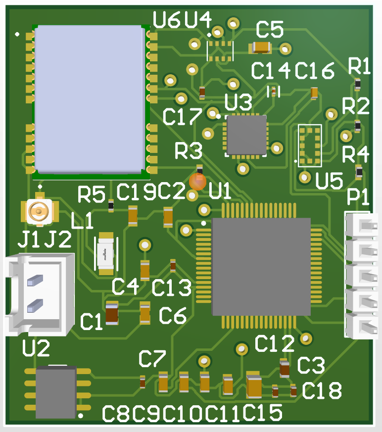
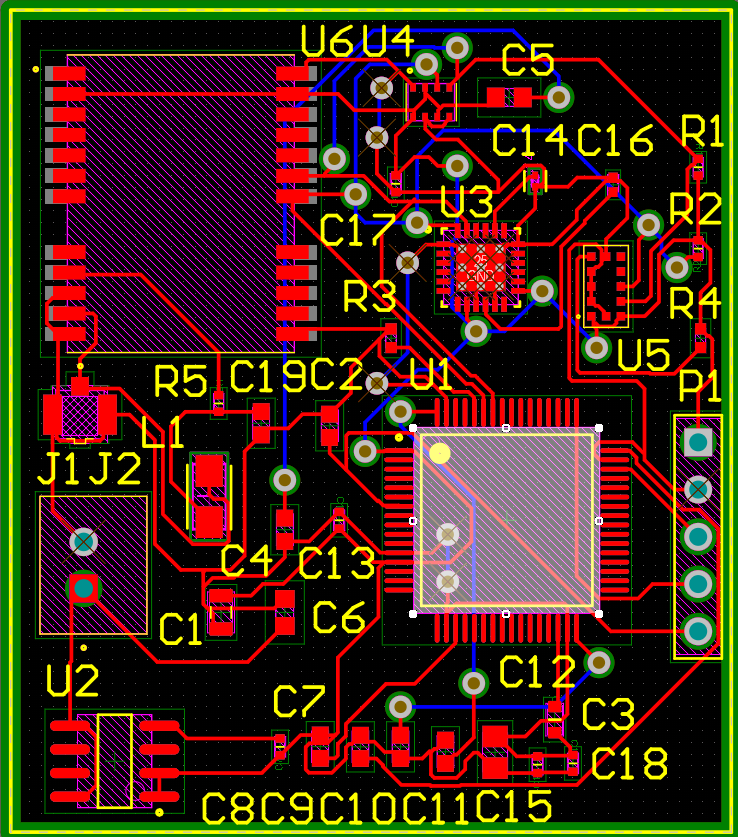
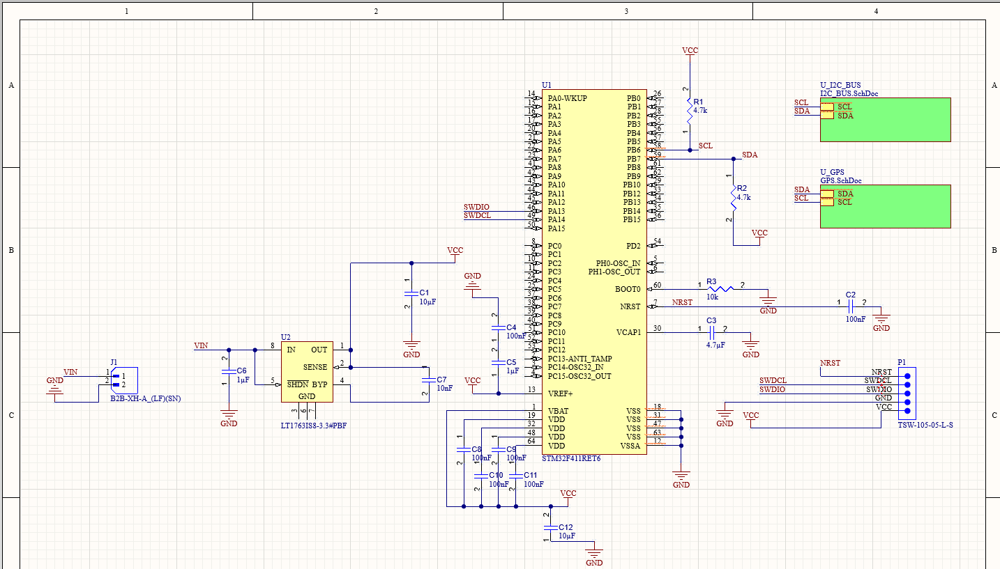
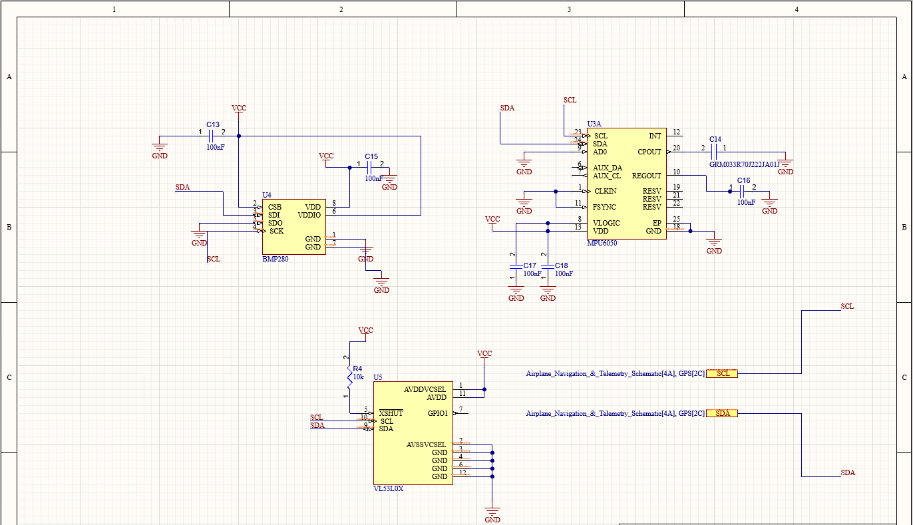
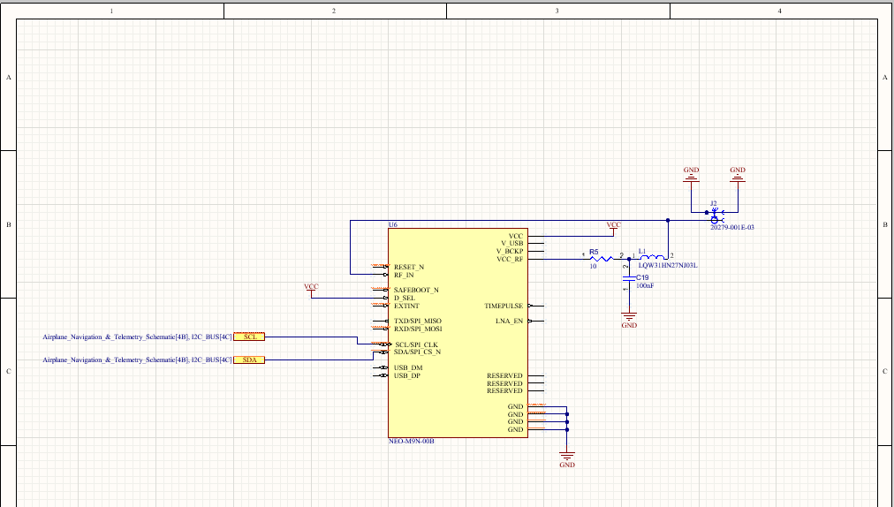

Airplane Navigation & Telemetry Board
A compact avionics board built around a bare STM32F411RET6 chip, integrating GPS, a 6-axis IMU, a barometer, and a time-of-flight sensor on a single shared I²C bus. Designed as a self-contained navigation and telemetry computer for a fixed-wing aircraft: rather than feeding a separate autopilot, the onboard STM32F411 reads every sensor directly and handles navigation and telemetry itself, keeping the design simple and the routing tight.

The sensor suite shares SCL/SDA on I²C1 with a single pair of bus pull-ups: a u-blox NEO-M9N for position and time, an InvenSense MPU6050 for 6-axis motion, a Bosch BMP280 for barometric altitude, and a VL53L0X time-of-flight sensor. Power comes in at 5 V from the aircraft's BEC rail and is regulated down to 3.3 V through a low-noise LT1763 LDO with reverse-polarity protection, and a 5-pin SWD header gives debug/programming access. The board is laid out on a 4-layer stackup with a solid internal ground plane for clean signal return and low EMI, designed in Altium with a hierarchical schematic split across dedicated I²C-bus and GPS sub-sheets.




This board is the successor to an earlier module-based sensor board ("Aviation Sensors"), which combined GNSS, IMU, time-of-flight, and barometer data with a proper RF front end: a 50 Ω controlled-impedance trace and bias-T network for an active GNSS antenna. This revision moves the microcontroller onto the board itself as a bare chip rather than a dev module, and switches the GPS to an I²C interface to keep everything on one bus.
What I Learned
I learned about mixed signal PCB design, what a bias-T does and the considerations for implementing an RF antenna. I learned how to effectively structure a hierarchical schematic in Altium and how to use the design rules to enforce good layout practices. I also learned how to design a PCB with a bare microcontroller. Gained an understanding of the function of decoupling and bulk capacitors around IC's. Learned the importance of a solid ground and power plane and how to implement it in a PCB design.
Challenges I Faced
The most challenging aspect of this project was managing the complexity of the mixed-signal design and ensuring proper isolation between the RF and digital sections. I researched and found the bias-T which seperates the RF needed for the GNSS antenna and the DC power needed for the chip and implemented it into my board. Another challenging aspect was ensuring that the pins of the STM32 were correctly configured with respect to the datasheet. I used the STM32CubeMX tool to generate the correct pin configuration and initialization code for the microcontroller so that there was no ambiguity on pin assignments.
What I'd Improve
If I were to redo this project I would spend much more time on the layout of the board, I spent so much time ensuring that my schematic was efficiently laid out and correct but I felt that I rushed the layout, making it less space efficient then I would like. I would also have placed more components on the bottom signal layer to improve space efficiency.